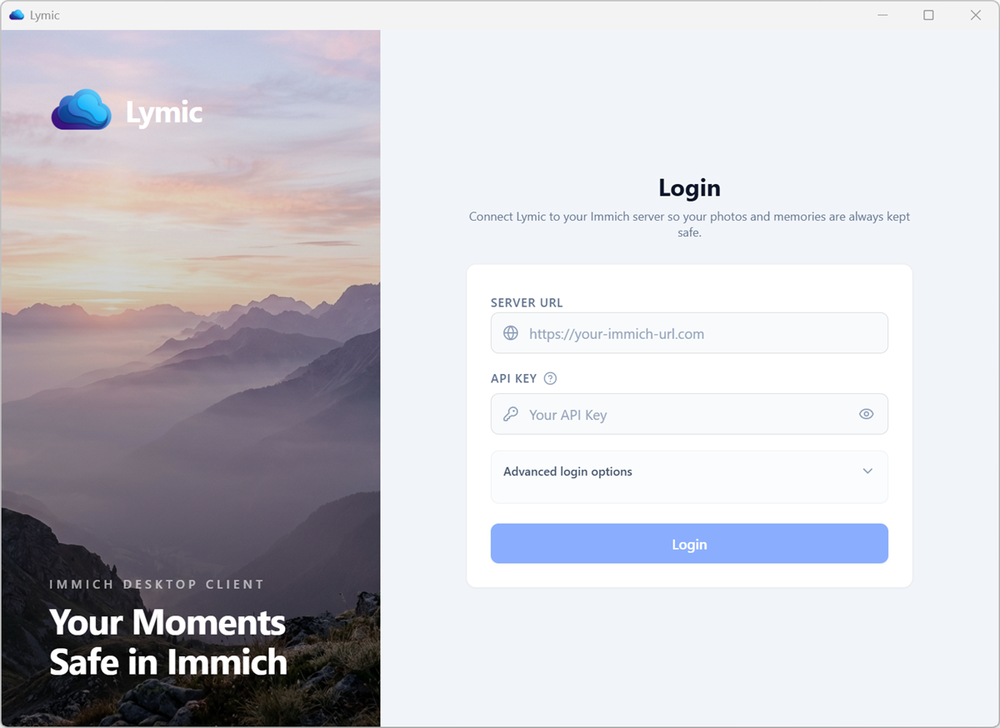

Connect securely to your Immich Server.
Sign in directly to the Immich Server that receives your media. Lymic keeps settings and Synchronization progress in local SQLite storage, while API credentials stay protected by the native OS keyring rather than the database.
